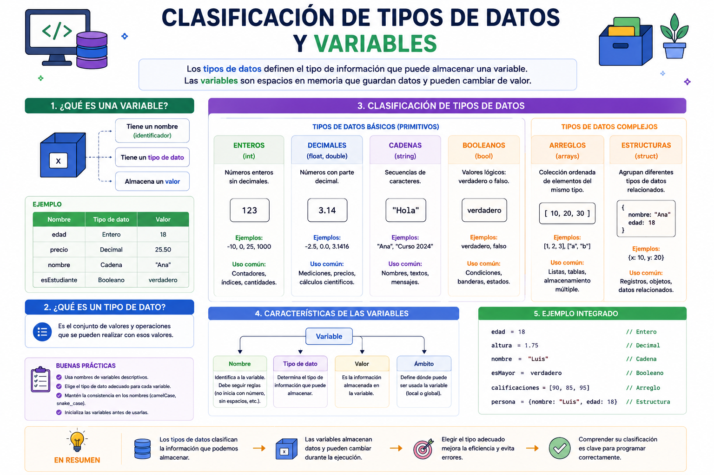

Cuando te registras en una red social o plataforma digital, el sistema guarda tu información en diferentes casilleros de su memoria RAM. Tu edad se almacena en un casillero exclusivo para números enteros; el costo de un producto con centavos va a un casillero decimal; y tu nombre se resguarda en uno de texto. Si el sistema confundiera estos tipos de datos e intentara multiplicar tu apellido por dos, el software colapsaría de inmediato. De ahí radica la importancia de clasificar los datos de forma exacta.
⚠️ Debes visualizar el video completo sin adelantar para desbloquear la evaluación.
Material audiovisual adaptado con fines estrictamente educativos. Créditos del autor: Retro.

Los tipos de datos determinan la naturaleza de los valores que un programa puede manipular en la memoria RAM, fijando sus límites operacionales y las funciones válidas que se pueden ejecutar con ellos.
¿Qué pasaría si un sistema confunde un tipo de dato de texto con uno numérico e intenta multiplicarlos?
¿Cuál es la diferencia fundamental entre una variable y una constante en la memoria RAM?
Si guardamos el valor de la temperatura de un reactor espacial como "36.6 °C", ¿qué tipo de dato numérico se está empleando?
¿Cuáles son los dos únicos estados lógicos válidos admitidos por un tipo de dato Booleano?
Para almacenar la cantidad exacta de alumnos inscritos en la especialidad de programación (por ejemplo, 512), ¿qué tipo de dato es el ideal?
¿En qué lugar físico del hardware se apartan de forma temporal los casilleros de memoria para nuestras variables?
¿Qué tipo de dato usarías para guardar la respuesta a la pregunta: "¿El estudiante completó la misión?"?
Si declaramos una constante con el valor de Pi (3.1416), ¿qué significa esto para el resto del programa?
¿Por qué es necesario definir los límites operacionales de los tipos de datos?
Un correo electrónico como "usuario@cbtis171.edu.mx" pertenece al tipo de dato de: